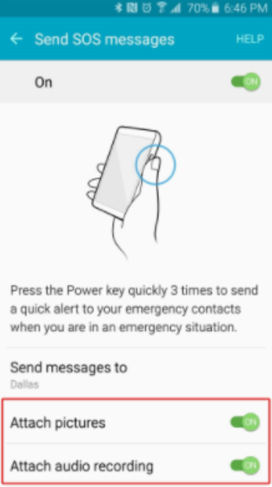

Panic Button: Lessons for the Tech for Good Sector
This post is by Tanya O’Carroll, Adviser Tech and Human Rights, Amnesty International; Danna Ingleton, Adviser, Human Rights Defenders; and Jun Matsushita, Founder and CEO, iilab.
Making the decision to cease support for the Panic Button app was not an easy one, but it was also not an empty one. We believe that diving into the challenges we faced, and sharing them with our communities is key to building similar – and better – tools in the future. The challenges we faced are interlinked, and by no means specific merely to us.
 .
.
The short-lived boom in apps 4 good
When we started this project in 2012, there was a lot of excitement about “tech 4 good.” Lots of organizations in the social change sector were seeking ways to innovate, and the sector was awash with small grants for technology projects.
However, if there is one theme of the last few years, it’s that there is still no functioning revenue model for funding sustainable and scalable technology in the social sector.
In 2012, the Ford Foundation provided Amnesty International with a grant of $125,000 to explore how we could use technology more directly in our work. With this, the organization hired a part-time post on tech and human rights, funded an open innovation challenge with OpenIDEO and built a first version of the Panic Button app. We were able to build off this a year later with £100,000 from Google as runners-up in the Global Impact Awards. This grant funded the beta version of the app and a global pilot with more than 100 HRDs in Central America, East Africa and South-East Asia.
If there is one theme of the last few years, it’s that there is still no functioning revenue model for funding sustainable and scalable technology in the social sector.
We were convinced that once up and running, we would be able to demonstrate the concrete need for Panic Button, thereby attracting further long-term funding and permitting us to hire a project team. Our vision was to spin off Panic Button from Amnesty International, allowing us to explore a wider range of revenue models that would permit the app to scale, evolve and localize to cater to a greater number of countries and languages over time.
Unfortunately this never happened. Amnesty continued to put its own resources into keeping the project afloat but these were always small and temporary injections of resourcing. As such, the Panic Button project became a lesson in ‘what comes after innovation’. Despite broad community buy-in and a clear and stated need for the app by users, we couldn’t secure the funding that would move the project beyond its first, fledgling phase.
This has been a common experience of many technology projects over the last few years. Foundations have gotten cold feet when it comes to funding technology projects — and especially apps. One of the few funds that does provide sustained multi-year funding for technology projects is the Open Technology Fund (OTF) —which has helped apps such as the end-to-end encrypted messaging service Signal make it to scale. But as OTF receives US State Department funding, it rules it out for organizations like Amnesty International who do not accept government funds.
The false alert problem
One of the biggest and most troubling technical issues we faced is that the Panic Button app has on occasion alerted people’s contacts without them triggering it intentionally. Given that the app was still in “beta” — meaning it was still in test phase — we took pains to warn people about this from when it was first brought to our attention. We also worked hard with our partners iilab to find a solution to fix it.
Unfortunately, after multi-month efforts, we have had to acknowledge that it is not an issue with a simple solution. That’s because the false alerts are not actually caused by any technical fault in the software. The app is actually behaving exactly as it was programmed to.
To explain: one of the features that many human rights defenders told us was essential to making Panic Button useful for them, was the ability to trigger the alert without having to open up the app, which would take time and be difficult in an emergency. In response, we decided to make the phone’s power button the trigger for the app. All it took was five fast presses of the power button and the alert messages would start sending once the app was set-up and active.
Unfortunately, pressing the power button on Android is directly linked to the phone’s screen turning on and off (this is a limitation of working within the operating system). This means that anytime the phone’s screen lights up and switches off, it is technically counted as one press of the power button.
As it turns out, there are several things that can trigger a phone screen lighting up and off in quick succession. One of the most frequent is when a phone receives a large number of SMS messages at the same time. This often happens when people use top-up credit, as mobile operators send multiple promotions and updates at the same time (a common way a lot of our users use their phones).
Because we were working within a constraint of the operating system, our hope was to try and reduce “false positives” (unwanted triggers) by changing the trigger pattern to something less likely to occur accidentally (you can see some of the trigger patterns that we explored here).
Unfortunately, we were unable to find a solution that would reduce false positives without seriously compromising on usability. Each new barrier we added to stop unwanted alerts ran the risk of making the app less useful for activists who needed be able to trigger the alert easily and swiftly in an emergency. We tested out some of our solutions with activists in Nairobi last year. Based on their feedback, we decided we were not willing to make changes that while reducing one problem, simply increased another: the app’s usability.
Panic features for the future
Panic Button has remained in a limbo for too long as we tried to seek a solution. Now as we look around at a lively ecosystem of security apps and tools, we recognize that Amnesty can have a greater impact promoting and advocating for “panic features” that work across devices and languages, rather than trying to develop our own app.
There are now countless Panic Button apps on the Google Play Store and many of them are better resourced, allowing them to scale for more phones and in a greater number of languages.
Some companies have also taken steps to build “emergency alert” features into their operating systems. For example, Samsung introduced SOS messages on the Galaxy S6. The feature shares a lot with Panic Button, including sending a map link with the user’s coordinates, the ability to trigger the feature from the phone’s power button, and the ability to choose up to 3 emergency contacts. It also includes features that we were planning for future releases of Panic Button, such as the option to send pictures and an audio recording as attachments in the emergency messages.

We would like to see other phone makers follow Samsung’s lead, as ultimately this kind of feature would be useful to a far greater number of people if it was embedded in every handset alongside other routine features like airplane mode. We are calling on Google and Apple to make the SOS feature happen across all phones using their respective OSes (something which tech blog Boing Boing has also called for).
So far, Apple’s announcement of new features to iOS11 don’t go far enough. While they do include an Emergency SOS option, which can be triggered by pressing the Sleep/Wake button five times, at the moment this simply dials emergency services, which for human rights activists is less useful than being able to alert their own network. Apple should expand the utility of this feature by letting users choose their own emergency contacts, empowering them to develop a strong emergency response plan with their trusted networks.
So, what next?
When we started Panic Button, it was an idea that needed testing in the real world: the idea that a mobile alert app could be a simple but effective tool for human rights defenders at risk. Five years on, and we’re more confident than ever of the need that underpins Panic Button. We have been in security trainings and workshops all over the world where we have heard about the crippling daily insecurity of HRDs. We have been heartened to see that a simple tool can trigger concrete, practical conversations with HRDs about emergency response plans.
Planning for a situation that you hope will never happen is not easy, but these conversations are also necessary. We repeatedly saw that the concept of the PACT was invaluable, helping defenders face scenarios they should never have to face, and, in doing so, empowering them to take back some control of their security.
We will be building on these learnings by integrating the PACT methodology more deeply into Amnesty’s long-standing work with human rights defenders. We will be further building on the online training kit and interactive game we developed (imPACT) with the hope that these can become staple tools for facilitating emergency response planning in the human rights field.
As to the future of the app itself, while we are ceasing support for the app, the code is all still available on Github. This includes some features that have been worked on but not released, for any adventurous developers out there.
For developers interested in contributing to advancing “panic features” more generally, there are other great efforts from open source mobile developers with the same care for human rights defenders that need more support. For example, we have worked closely with the Guardian Project in the past couple of years on their Panic Kit initiative, which aims to make your whole phone respond to an emergency by locking down certain apps to protect your data.
Amnesty International and iilab will also continue to advocate for panic features in more handsets , so that one day every mobile phone will double as an alert system without the need to download an app. This would not only be valuable for human rights defenders, but it would also be a useful feature for anyone facing a situation of risk. We will also be pushing for Google and Apple to integrate a panic function that will work across their operating systems and be as simple and intuitive as airplane mode.
Ultimately, while we are sad as the Panic Button app experiment draws to a close, we are satisfied it has helped many HRDs across the world to rethink their security planning — while advancing a framework for doing so that we hope will long outlive the app.